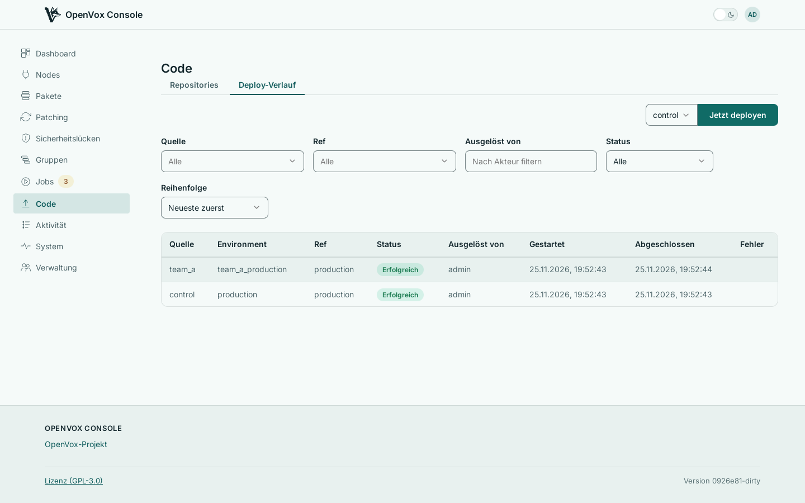

Nutzung
Code deployen
Deployen Sie Puppet-Code aus einem oder mehreren Control-Repositories in die Environments, aus denen openvoxserver kompiliert.
Die Konsole deployt Puppet-Code aus Control-Repositories – ein Puppetfile und Manifeste in git – mit g10k in das Environments-Verzeichnis, das openvoxserver liest. Jeder Branch eines Control-Repositorys wird zu einem Environment.
Deploys anzusehen erfordert code:read; eines zu starten erfordert code:deploy.
Code-Deployment einschalten
Code-Deployment bleibt ausgeschaltet, bis die Konsole weiß, wo g10k liegt, was deployt werden soll und wohin:
| Einstellung | Was es ist |
|---|---|
CONSOLE_G10K_BIN_PATH |
das Programm g10k. Das Container-Image der Konsole enthält es und setzt diesen Wert bereits |
CONSOLE_CONTROL_REPO_URL |
ein einzelnes Control-Repository, aus dem deployt wird |
CONSOLE_CODE_SOURCES_PATH |
oder stattdessen eine Datei, die mehrere deklariert (siehe unten) |
CONSOLE_CODE_DIR_PATH |
das Verzeichnis, aus dem openvoxserver seinen Code liest; die Konsole deployt in dessen Verzeichnis environments |
CONSOLE_CODE_WEBHOOK_SECRET |
das Secret, mit dem die Webhooks des Git-Hosts signiert werden |
CONSOLE_CONTROL_REPO_URL und CONSOLE_CODE_SOURCES_PATH können nicht beide gesetzt sein: Die Konsole verweigert den Start, statt sie zu kombinieren.
Die Konsole und openvoxserver müssen sich dieses Verzeichnis teilen. Bei Paketen auf einem Host richten Sie CONSOLE_CODE_DIR_PATH auf /etc/puppetlabs/code und lassen den Benutzer der Konsole in dessen Verzeichnis environments schreiben.
Mit dem Container-Stack
Die Produktions-Compose-Datei reicht keine dieser Einstellungen an die Konsole durch und gibt ihr nicht das Code-Volume von openvoxserver. Fügen Sie beides in einer compose.code.yml daneben hinzu:
services:
console:
environment:
CONSOLE_CONTROL_REPO_URL: ${CONSOLE_CONTROL_REPO_URL:?set the control repository}
CONSOLE_CODE_DIR_PATH: /etc/puppetlabs/code
CONSOLE_CODE_WEBHOOK_SECRET_FILE: /run/secrets/code_webhook_secret
volumes:
- openvoxserver-code:/etc/puppetlabs/code
secrets:
- code_webhook_secret
secrets:
code_webhook_secret:
file: ./secrets/code_webhook_secret
Übergeben Sie sie dann in jedem Befehl nach der Hauptdatei:
docker compose -f docker-compose.yml -f compose.code.yml up -d console
Diese Kombination wurde noch nicht so vollständig durchgespielt wie die Installationsanleitungen. Wenn ein Deploy gelingt, openvoxserver den Code aber nicht sieht, prüfen Sie, ob beide Container unter /etc/puppetlabs/code/environments dieselben Dateien zeigen.
Aus mehreren Control-Repositories deployen
Um aus mehr als einem Repository zu deployen, deklarieren Sie diese in einer YAML-Datei und richten CONSOLE_CODE_SOURCES_PATH darauf:
sources:
control:
remote: git@github.com:org/control-repo.git
prefix: false # branch production -> environment production
team_a:
remote: git@github.com:org/team-a-control.git
prefix: true # branch production -> environment team_a_production
private_key: /etc/openvox-console/keys/team_a
webhook_secret_file: /etc/openvox-console/team_a_webhook
- Der Name einer Quelle darf nur Kleinbuchstaben, Ziffern und
_enthalten, weil er Teil von Environment-Namen wird. prefixbestimmt die Environment-Namen, die aus den Branches einer Quelle entstehen:truestellt ihnen den Namen der Quelle voran,falseoder nicht gesetzt lässt sie unverändert, und ein String wird als Präfix verwendet. Zwei Quellen dürfen nicht dasselbe Präfix erhalten, daher kann höchstens eine ohne Präfix sein; andernfalls verweigert die Konsole den Start.- Jede Quelle kann ihren eigenen Deploy-Schlüssel und ihr eigenes Webhook-Secret haben.
Eine neue Quelle mit Präfix wird erfolgreich deployt und ändert nichts, bis Nodes in ihre neuen Environment-Namen klassifiziert werden. Nichts verschiebt Nodes für Sie dorthin.
Deployen
Öffnen Sie Code. Der Tab Repositories listet jedes Repository mit seinen Environments und seinem letzten Deploy; Deployen bei einem Repository deployt dessen production-Branch. Jetzt deployen im Tab Deploy-Verlauf tut dasselbe für das Standard-Repository.
Deploys desselben Environments überschneiden sich nie, egal wie viele Konsoleninstanzen laufen. Jedes erscheint im Deploy-Verlauf, mit der Person, die es gestartet hat, und auf der Seite Aktivität.


Bei jedem Push deployen
Um bei jedem Push eines Branches zu deployen, fügen Sie dem Repository auf Ihrem Git-Host einen Webhook hinzu:
- URL:
https://console.example.com/api/v1/code-deploys/webhookoder, für eine von mehreren Quellen,https://console.example.com/api/v1/code-deploys/webhook/<source name> - Content type: JSON
- Secret: das Webhook-Secret dieser Quelle
- Events: Pushes
Die Konsole prüft die Signatur jeder Zustellung (den Header X-Hub-Signature-256) gegen das Secret und deployt den gepushten Branch.
Den Tab „Repositories“ lesen
Jedes Repository zeigt zwei Node-Zahlen, und die Lücke dazwischen ist der nützliche Teil:
- Zugewiesen: Nodes, die die Klassifizierung einem der Environments des Repositorys zuweist.
- Meldend: Nodes, deren letzter Puppet-Lauf eines davon verwendet hat.
Zugewiesen, aber nichts meldend bedeutet Code, der deployt ist, den aber noch kein Node ausgeführt hat. Meldend, aber nichts zugewiesen bedeutet Nodes, die Code ausführen, zu dem keine Gruppe sie schickt – meist ein Environment, das eine entfernte Quelle zurückgelassen hat, oder ein Node, der in seiner eigenen puppet.conf ein environment gesetzt hat.
Größe ist die Größe der deployten Dateien, nicht der Festplattenverbrauch: g10k teilt Module zwischen Environments, daher überschneiden sich die Größen der Repositories.
Eine Quelle aus der Konfiguration zu entfernen stoppt ihre Deploys, lässt ihre Environments aber auf der Festplatte, wo openvoxserver weiter aus ihnen kompiliert. Löschen Sie sie selbst, wenn Sie das beabsichtigt haben.